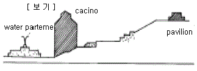
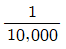
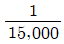
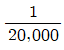
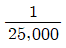
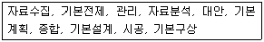
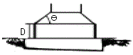

조경기사 (2005-05-29 기출문제)
1과목: 조경사
1. 다음 중 일본정원의 역사에 관한 설명 중 가장 바른 것은?
- 무로마치(室町)시대의 정원양식의 특징은 소정(小庭), 석정(石庭), 고산수(枯山水) 등의 석조(石組)가 발달한 것으로 육림원이 그 대표적인 것이다.
- 모모야마(桃山)시대에는 거대한 정원석, 호화로운 석조, 명목(名木) 등을 사용한 화려한 색조의 정원으로 삼보원(三寶院) 정원이 그 대표가 된다.
- 에도(江戶)시대 정원양식의 특징은 연못내에 삼신선도가 있는 대정원으로 후낙원(後樂園)은 소굴원주소굴원주(小堀遠州)가 설계하고 그는 또 작정기(作庭記)를 저술하였다.
- 신라의 유민인 노자공이 6세기 초에 궁궐에 작정한 것이 일본정원의 시초로 본다.
(정답률: 38%)

2. 고대 여러 나라의 특징적인 정원을 적은 것으로 가장 거리 가 먼 것은?
- 이집트 - 신원(Shrine garden)
- 바빌로니아 - 공중공원(Hanging garden)
- 그리스 - 아카데모스(Academos)
- 로마 - 크라우스트럼(Claustrum)
(정답률: 67%)
3. '최치원'이 신라 헌강왕 때 여러 곳에 별서를 짓거나 머무르며 풍류를 즐겼던 장소가 아닌 곳은?
- 경주의 남산
- 영주의 빙산
- 합천의 해인사
- 하동 쌍계사
(정답률: 알수없음)
4. 미국의 조경가 옴스테드(Frederick Law Olmsted)에 관한 설명 중 가장 거리가 먼 것은?
- 근대적 도시공원의 터전을 닦은 인물이다.
- 영국의 자연식 조경을 매우 애호하였다.
- 'Landscape architect'라는 칭호를 처음으로 사용하였다.
- 그의 작품 속에는 직선적인 원로(園路)를 크게 강조하였다.
(정답률: 45%)
5. 윤선도의 부용동(芙蓉洞)정원의 세연지(洗然池)에 관한 설명 중 가장 적당한 것은?
- 방지원도형(方池圓島形)으로 섬이 하나이다.
- 방지원도형으로 섬이 셋이다.
- 방지방도형으로 섬이 하나이다.
- 방지방도형으로 섬이 셋이다.
(정답률: 28%)
6. 통일신라 시대의 대표적인 면모를 가진 독특한 조경은?
- 반월성지(半月成址)
- 안압지(雁鴨池)와 포석정(鮑石亭)
- 안학궁의 성지(城址)
- 아미산 후원(後園)
(정답률: 알수없음)
7. 다음 한국조경에 관한 설명 중 가장 거리가 먼 것은?
- 조선시대는 한국적 기후와 풍토에 적합한 자연풍경식 조경이 발달했다.
- 낭만적이거나 대륙적인 특성을 찾기 어렵다.
- 꽃을 감상하는 수목식재로 계절변화의 즐거움을 느낄 수 있다.
- 덕수궁에는 한국 최초의 중정식 정원이 있다.
(정답률: 75%)
8. 18세기에 조성된 영국의 스토우 가든(Stowe Garden)은 몇 차례의 개조를 통해서 전형적인 영국 자연풍경식 정원으로 완성된다. 프랑스 정원 양식의 특징인 기하학적으로 직선을 변화시킴으로써 자연풍경식 정원으로 분위기를 개조한 사람은?
- 브릿지맨(C. Brideman)
- 와이즈(H. Wise)
- 캔트(W. Kent)
- 브라운(L. Brown)
(정답률: 45%)
9. 다음 인물 중 중국정원에 영향을 끼친 문인이 아닌 것은?
- 백거이(伯居易)
- 왕유(王維)
- 이계성(李計成)
- 구양순(歐陽詢)
(정답률: 54%)
10. 중국 진시왕 31년에 새로이 왕궁을 축조하고, 그 안에 큰 연못을 조성한 후 그 속에 봉래산을 만들었다. 이 연못의 명칭은?
- 곤명호(昆明湖)
- 태액지(太液池)
- 난지(蘭池)
- 서호(西湖)
(정답률: 40%)
11. 근대 미국의 환경보존주의 창시자이며, 인간을 자연과의 협력자의 위치로 보고, 후에 미국 국립공원 환경보존법 설치에 영향을 미친 사람은?
- Geoge Perkins Marsh
- John Ruskin
- Henry David Thoreau
- Norman Shaw
(정답률: 25%)
12. 다음 중 지구랏트(ziggurats)의 설명으로 가장 거리가 먼 것은?
- 옛 Sumerian Temple로서 피라밋 보다 이전에 나타난 것이다.
- 직선적이고 대칭적 접근로가 그 특징으로 들 수 있다.
- 신성스런 나무 숲과 맨 꼭대기에는 사원이 있었다.
- 평원에 이집트의 피라밋에 비교될만한 인조산과 같은 높이로 단(壇)을 쌓아 올렸다.
(정답률: 알수없음)
13. 프랑스 베르사유궁원에서 사용된 '파르테르(Parterre)'란 명칭으로 가장 적당한 것은?
- 정원의 분수 이름
- 화단 명칭
- 옹벽위의 난간
- 산책로
(정답률: 91%)
14. 고려 문종(文宗)은 1070년 곡수연을 하였으며, 그 곡수연(曲水宴)의 장소는 봄에 모란과 작약, 가을에 국화가 만발하는 화려한 정원이었다. 이 장소의 이름은?
- 연경궁(延慶宮) 후원의 상춘정
- 수창궁(壽昌宮) 북원(北園)의 만수정
- 수령궁(壽寧宮) 후원의 양화정
- 운현궁(雲峴宮) 후원의 태평정
(정답률: 25%)
15. 독일에서 발달한 분구원(分區園)에 대한 설명 중 가장 거리가 먼 것은?
- 초기에는 도시민의 보건과 녹지 제공에 중점을 두었다.
- 제 1차 대전 중에는 시민의 식량생산지로 공헌하였다.
- 도시민의 보건을 위해 채소, 화훼 재배장으로 제공하였다.
- 남녀노소의 심신단련에 필요한 시설을 각 구역 마다 설치하였다.
(정답률: 75%)
16. 보기의 단면도에 해당되는 르네상스 시대의 별장 정원으로 가장 적당한 것은?

- 메디치장(Villa Medici)
- 란테장(Villa Lante)
- 에스테장(Villa d'Este)
- 카스텔로장(Villa Castello)
(정답률: 55%)
17. 티볼리의 빌라 에스테(Villa d'Este of Tivoli)의 설명으로 가장 거리가 먼 것은?
- 물을 가장 다양하고 기묘하게 이용한 작품이다.
- 전형적인 이탈리아 르네상스 정원이다.
- 4개의 테라스 가든으로 만들었고 각 테라스는 돌계단으로 연결하였다.
- 리고리오(Pirro Ligorio)에 의해 설계된 정원이다.
(정답률: 50%)
18. 다음 중 앙드레 르 노트르의 정원 구성원칙에 대한 설명으로 가장 거리가 먼 것은?
- 원근법을 정원설계에 적용한다.
- 대지의 기복에 조화시키되 축에 기초를 둔 2차원적 기하학을 구성한다.
- 조각, 분수 등 예술작품을 공간구성에 있어 리듬 혹은 강조 요소로 사용한다.
- 비스타를 형성한다.
(정답률: 82%)
19. 상류주택의 외부공간 가운데 외부 자연경물의 시각적 접촉에 비중을 두고 있으며 인위적인 경관조성기법이 가장 많이 사용된 공간은?
- 사랑마당
- 별당마당
- 바깥마당
- 후원
(정답률: 50%)
20. 다음 내용 중 연결이 잘못된 것은?
- 용안사 - 평정고산수
- 다정 - 모모야마시대(桃山時代)
- 서방사 - 몽창국사(몽창소석)
- 계리궁(桂離宮) - 무로마찌시대(室町時代)
(정답률: 67%)
2과목: 조경계획
21. 다음 중 위계형(位階形) 도로 패턴의 적용이 가장 적절치 않은 곳은?
- 주거지
- 도심지(C.B.D)
- 캠퍼스
- 공원
(정답률: 65%)
22. 소음의 정의를 가장 포괄적으로 내리고 있는 항목은?
- 원하지 않는 소리
- 시끄러운 소리
- 청각장애를 일으키는 소리
- 불쾌한 소리
(정답률: 알수없음)
23. 3만제곱미터 이상 10만제곱미터 미만의 면적을 가진 도시 공원법상의 근린공원 건폐율은?
- 5/100 이하
- 10/100 이하
- 15/100 이하
- 20/100 이하
(정답률: 29%)
24. 다음 중 도시공원 주변의 골프연습장의 설치기준에 관한 설명 중 가장 거리가 먼 것은?
- 도시공원을 이용하는 주민들이 쉽게 접근할 수 있고 공원의 다른 시설과 조화를 이룰 수 있는 지역일 것
- 임상이 양호한 지역이나 절토 또는 성토의 높이가 3미터이상 필요한 지역이 아닌 것
- 근린공원 및 체육공원에 설치하는 골프연습장은 공원면적이 20만제곱미터이상인 경우 2개소로 한다.
- 하나의 공원이 2이상의 시·군 또는 구의 행정구역에 걸쳐 있는 경우에는 각 시·군 또는 구에 속한 공원의 면적을 기준으로 해서 설치한다.
(정답률: 38%)
25. 개발제한구역, 녹지지역을 제외한 도시지역안에서의 도시공원의 면적기준은 당해 도시계획구역안에 거주하는 주민 1인당 몇 m2이상이 되어야 하는가?
- 3m2
- 6m2
- 9m2
- 12m2
(정답률: 39%)
26. 주택단지의 인구밀도를 검토할 때 주거목적의 획지 면적만을 기준으로 산출한 밀도는?
- 순밀도
- 총밀도
- 근린밀도
- 용지밀도
(정답률: 71%)
27. 다음 중 "모테이션 심벌(motation symbols)이라 불리는 인간행동의 움직임의 표시법을 고안하여 인간의 움직임을 기록하고 동시에 설계할 수 있도록 한 인물은?
- 린치(Lynch)
- 할프린(Halprin)
- 스타이니츠(Steinitz)
- 제이콥스 와 웨이(Jacobs and Way)
(정답률: 75%)
28. 주거단지계획시에 칼데삭(cul-de-sac)도로 이용의 장점을 가장 잘 설명하고 있는 것은?
- 단지내 보행동선을 가장 짧게 할 수 있다.
- 차량동선을 가장 짧게 할 수 있다.
- 차량의 접근성을 높일 수 있다.
- 차량으로 인한 위험이 없는 녹지를 단지내에 확보할 수 있다.
(정답률: 74%)
29. 다음 자연공원법상의 공원기본계획 및 공원계획에 관한 내용 중 가장 잘못된 것은?
- 공원기본계획의 내용 및 절차 기타 필요한 사항은 대통령령으로 정한다.
- 환경부장관은 10년 마다 국립공원위원회의 심의를 거쳐 공원기본계획을 수립하여야 한다.
- 공원관리청은 15년마다 지역주민, 전문가 기타 이해관계자의 의견을 수렴하여 공원계획의 타당성 여부를 검토하고 그 결과를 공원계획의 변경에 반영하여야 한다.
- 도립공원에 관한 공원계획은 시·도지사가 결정한다.
(정답률: 50%)
30. 제이콥스와 웨이(Jacobs and Way)가 주창한 시각적 흡수성에 영향을 주는 직접 요인이 아닌 것은?
- 식생의 밀집정도
- 지형의 위요정도
- 시각적 요소의 수
- 지역 주민의 가치관
(정답률: 85%)
31. 표준적 골프 코스로서 가장 적당하게 구성된 것은?
- 18개의 홀, 전장 6,300야드, 용지면적 60 ~ 80만m
- 18개의 홀, 전장 7,500야드, 용지면적 40 ~ 60만m
- 18개의 홀, 전장 8,500야드, 용지면적 60 ~ 80만m
- 27개의 홀, 전장 7,500야드, 용지면적 40 ~ 60만m
(정답률: 39%)
32. 도시관리계획이 결정고시되면 시민에게 그 사업내용을 공람시키게 된다. 이때 필요한 도면으로 가장 적당한 것은?
- 조사, 분석도
- 기본계획도
- 지형도
- 지적도
(정답률: 39%)
33. Avery(1977)의 자료 중 수지형의 하천패턴이 형성 될 가능성이 가장 높고 점토의 함량에 따라 변화가 심한 암석 지질은?
- 화강암
- 석회암
- 화산주변
- 사암(砂岩)
(정답률: 43%)
34. 공원계획시 입지선정의 주요 기준으로 가장 보기 어려운 것은?
- 접근성
- 안전성
- 쾌적성
- 호환성
(정답률: 75%)
35. 마리나(marina) 시설에 대한 설명 중 틀린 것은?
- 선박시설을 갖춘다.
- 육상이동시설은 불필요하다.
- 수리시설을 갖춘다.
- 방파제 및 부표를 설치한다.
(정답률: 알수없음)
36. 항공사진에 있어서 비행고도(H)가 3,150m 이고, 카메라 촛점거리(f)가 210mm 일 때 이 항공사진의 평균 축척은?




(정답률: 알수없음)
37. 우리나라 환경·교통·재해등에관한영향평가법의 평가서 초안에 포함되는 필수적 항목이 아닌 것은?
- 환경영향평가 대상지역의 설정
- 환경영향에 관한 분석 및 대책
- 환경에 미치는 불가피한 영향의 분석
- 인근주민의 사업에 대한 기본구상 및 대안
(정답률: 82%)
38. 일반적으로 보기의 조경계획 및 설계의 과정을 나열한 것 중에서 순서대로 세 번째 과정에 해당하는 것은?

- 자료 분석
- 종합
- 자료 수집
- 기본 전제
(정답률: 47%)
39. 다음 중 도로조경 계획의 설명 중 가장 거리가 먼 것은?
- 주변 토지이용과 노선의 구조적 특성 및 시각적 효과를 고려한 식재 및 시설물 배치를 한다.
- 교통 소통의 원활함을 위해 최대 회전반경과 최대 시거를 고려하여 계획한다.
- 절·성토의 균형 및 완만한 구배를 얻는 노선을 계획하도록 한다.
- 가능한 큰 곡선반경을 주어, 운전자가 되도록 직선에 가까운 노선으로 느끼도록 한다.
(정답률: 25%)
40. 조경계획의 접근방법 중 맥하그(McHarg)가 주장한 생태학적 접근방법의 설명으로 가장 적합한 것은?
- 생태적 복원 계획의 체계화
- 도면중첩법에 의한 최적 토지 용도의 결정
- 상대적 척도(interval scale)에 의한 특이성비 산출
- 도면결합법(overlay method)에 의한 자연형성 과정의 이해
(정답률: 알수없음)
3과목: 조경설계
41. 케빈 린치(Kevin Lynch)가 말하는 도시 이미지의 5가지 요소에 속하지 않는 것은?
- 통로(path)
- 표적물(landmark)
- 영역(domain)
- 결절점(node)
(정답률: 80%)
42. 트레싱지에 가는선을 처음에 흐리게 그리는 연필로 가장 적당한 것은?
- 4H
- H
- HB
- B
(정답률: 48%)
43. 다음 설계도 작성시 주의할 점이 아닌 것은?
- 도면 전체가 구도적인 미를 느끼도록 배치한다.
- 표현방법, 선, 문자가 통일되도록 한다.
- 반드시 잉킹(inking)을 하여야 한다.
- 정확해야 하며, 오류기재, 내용누락이 없어야 한다.
(정답률: 50%)
44. 도면에 레터링(lettering)을 할 때 주의할 사항 중 틀린것은?
- 원칙으로 레터링은 왼편부터 가로쓰기를 한다.
- 글자 선의 굵기와 기울기는 다양해도 괜찮다.
- 숫자는 가능한 한 아라비아 숫자를 사용한다.
- 도면에 과다하게 많은 글씨를 쓰지 않는다.
(정답률: 58%)
45. 전기, 전화, 상·하수도, 가스, 진개처리 등의 공급 처리 시설에 관계되는 계획은 다음 중 어디에 해당되는가?
- 시설물배치계획
- 시설물세부계획
- 하부구조계획
- 하부시설계획
(정답률: 48%)
46. 미적 형식원리에 관한 설명으로서 틀린 것은?
- 시대, 민족, 장소, 개인에 따라 미의 법칙에는 변용성이 있다.
- 고대에는 비례의 정확성에서 미의 근원을 찾는 사례가 많았다.
- 비례, 대칭, 율동 등에는 미의 법칙성이 존재한다.
- 미의 법칙성은 조형 예술에만 국한한 것이다.
(정답률: 65%)
47. 다음 중 D(거리), H(높이)의 비율 중 두 물체 사이의 간섭이 가장 강하게 작용하는 것은?
- D/H = 1
- D/H = 2
- D/H = 3
- D/H = 4
(정답률: 60%)
48. Red Book을 통하여 설계 전 경관(Before View)과 설계 후 경관(Arfer View)을 스케치로서 대비시킨 최초의 조경가는 ?
- Humphrey Repton
- Georgy Hargreaves
- Peter Walker
- Ian McHarg
(정답률: 100%)
49. 다음 형태지각에 관한 사항으로서 틀린 것은?
- 우리의 시각(視覺)은 형태를 보다 복잡화해서 보려는 경향이 있다.
- 직각(直角)은 쉽게 지각되며, 직각에서 조금만 변화가 있어도 쉽게 식별된다.
- 우리의 시각은 움직이지 않는 것 보다 움직이는 것에 더 흥미를 갖는다.
- 지각된 크기는 그 장소와 척도에 따라 실제의 크기와 다를 수 있다.
(정답률: 59%)
50. 다음 조경시설물과 조경구조물에 관한 설명들 중 가장 올바르게 설명한 것은?
- 조경구조물은 공원법의 공원시설 중 하부구조를 일컫는 말이다.
- 조경시설물은 공원법의 공원시설 중 상부구조의 비중이 큰 시설물을 말한다.
- 구조내력이란 구조부재를 구성하는 각 재료의 하중 및 외력에 대한 안전성을 확보하기 위하여 부재단면의 각부에 생기는 응력도가 초과하지 아니하도록 정한 한계 응력도를 말한다.
- 고정하중이란 구조물의 각 실별·바닥별 용도에 따라 그 속에 수용·적재되는 사람·물품등의 중량으로 인한 수직하중을 말한다.
(정답률: 50%)
51. 점이(Gradation)현상과 관련성이 가장 적은 것은?
- 인식의 흐르는 연속감을 느낄 수 있다.
- 형태의 교대적인 변화이다.
- 형태, 크기의 연속적 변화이다.
- 색상, 명도의 연속적 변화이다.
(정답률: 57%)
52. 200평의 대지면적에 건축면적 50평인 4층짜리 건물에 대한 건폐율은?
- 25%
- 50%
- 100%
- 200%
(정답률: 43%)
53. 알베도(Albedo)와 가장 관련성이 큰 것은?
- 시정
- 일최저기온
- 지상피복상태
- 강수량
(정답률: 64%)
54. 정투상도에 나타나는 그림의 명칭이 아닌 것은?
- 단면도
- 입면도
- 평면도
- 정면도
(정답률: 40%)
55. 풍경의 특질에 관한 설명으로 가장 올바른 것은?
- 풍경 질의 실체는 경관 자체내에 존재한다.
- 풍경 질의 실체는 인간의 마음속에 존재한다.
- 풍경 질의 실체는 경관과 인간의 양자사이에서 이루어지는 관계성을 내재한다.
- 풍경 질의 실체는 때와 장소 그리고 인간성과 더불어 변화하지 않는다.
(정답률: 67%)
56. 경관분석에서 정신물리학적 접근의 특성을 올바르게 설명하고 있는 것은?
- 경관의 물리적요소를 의사소통수단으로 보는 접근방법이다.
- 경관의 형태적 구성과 연상적 의미의 관련성에 관한 연구이다.
- 경관의 상징성에 관한 연구이다.
- 경관의 물리적 요소와 이에 대한 인간의 반응 사이의 직접적인 함수관계를 연구한다.
(정답률: 67%)
57. 다음 중 수질오염 방지시설의 설계시 물리적인 처리방법에 속하지 않는 것은?
- 스크린(screen)
- 침사지(sedimentation)
- 활성슬러지(activity sludge)
- 여과(filtration)
(정답률: 56%)
58. 다음 중 조경에서 놀이시설에 관한 사항 중 가장 거리가 먼 것은?
- 놀이터 어귀는 보행로에 연결시키고 입구는 2개소 이상 배치하되, 1개소 이상에는 8.3%이하의 경사로로 설계한다.
- 그네 미끄럼대 등 동적인 놀이시설은 시설물의 주위로 3.0m 이상의 이용공간을 확보하여야 한다.
- 흔들말 시설 등의 정적인 놀이시설은 시설물 주위로 2.0m이상의 이용공간을 확보하여야 한다.
- 기어오르기 시설의 높이는 1.5 ~ 2.0m를 기준으로 하고, 줄은 내구성·안전성 등에 적합하게 설계한다.
(정답률: 6%)
59. 자전거 도로에 관한 설계기준으로 가장 거리가 먼 것은?
- 자전거도로의 포장면에는 물이 고이지 아니하도록 1.5내지 2.0퍼센트의 횡단구배를 설치하여야 한다.
- 자전거도로의 7%이상의 종단구배에 따른 제한길이는 90미터 이하로 한다.
- 자전거도로의 양측에 0.2미터 이상의 갓길을 설치하여야 한다.
- 자전거도로의 폭은 반드시 1.5미터 이상으로 한다.
(정답률: 20%)
60. 휴게시설물의 규격이 가장 적합한 것은?
- 파고라 높이는 220 ~ 260cm 정도를 기준으로 한다.
- 평상의 마루 높이는 45 ~ 50cm 정도를 기준으로 한다.
- 의자의 앉음판의 높이는 50 ~ 55cm 정도를 기준으로 한다.
- 의자와 휴지통과의 이격 거리는 60cm 정도로 한다.
(정답률: 42%)
4과목: 조경식재
61. 바람의 통과가 매우 제한된 수림의 경우는 바람의 소용돌 이에 의해 바람 아래쪽의 임연(林緣)이 바람의 영향을 받는다. 수림(樹林)의 경우 얼마 정도의 밀폐도를 가질 때가 가장 적당한가?
- 10 ~ 30%
- 30 ~ 50%
- 50 ~ 70%
- 70 ~ 90%
(정답률: 50%)
62. 화아분화가 가장 잘 될 수 있는 조건은?
- 식물체내의 N 성분이 많을 때
- 식물체내의 K 성분이 많을 때
- 식물체내의 P 성분이 많을 때
- 식물체내의 C/N율이 높을 때
(정답률: 46%)
63. 다음 조경수 중 여름에 적색 계통의 꽃이 피는 수종으로 짝지워진 것은?
- 배롱나무, 자귀나무, 능소화, 협죽도
- 명자나무, 박태기나무, 차나무, 남천
- 꽃아그배나무, 서향, 라일락, 싸리나무
- 매화나무, 꽃산딸나무, 마가목, 등나무
(정답률: 58%)
64. 만성관목(蔓性灌木)으로 짝지워진 것 중 가장 적당한 것은 ?
- 남천, 시로미
- 담자리꽃나무, 노박덩굴
- 들쭉나무, 애기진달래
- 멀꿀, 헤데라
(정답률: 50%)
65. 수목의 식재공사에 관한 기술 중 옳지 못한 것은?
- 객토용 토양은 부식질이 풍부하고 불순물이 혼입되지 않은 사질양토를 사용한다.
- 물이 괴는 토질이나 배수가 지나치게 잘 되는 토질에서는 식재시 토양개량재료를 섞어 줄 필요가 있다.
- 식재지의 토질은 단립구조로서 구성하여야 하며, 일정 용량 중 토양입자 35%, 수분 30%, 공기 35%의 구성비를 원칙으로 한다.
- 배수가 안되는 토질은 적정간격 및 적정규모의 암거설치를 하거나 마운딩을 실시한 후에 식재한다.
(정답률: 54%)
66. 다음 중 벽오동의 학명으로 가장 적당한 것은?
- Prunus leveilli Koehne
- Sorbus commixta Hedlund
- Firmiana simplex W.F.Wight
- Weigela subsessilis L.H.Bailey
(정답률: 73%)
67. 다음 중 배기가스에 강한 수목은?
- 녹나무
- 단풍나무
- 삼나무
- 목련
(정답률: 39%)
68. 수목의 굴취시 뿌리분의 크기는 대체로 무엇을 기준으로 정하는가?
- 흉고직경
- 수고
- 근원직경
- 수관폭
(정답률: 70%)
69. 다음 성질 중 Thuja occidentalis L. 에 관한 내용으로 가장 거리가 먼 것은?
- 피라밋 형태의 원추형 수형이다.
- 성목은 이식이 잘 된다.
- 바람막이용으로 식재하기 적당하다.
- 적고병이 많이 발생한다.
(정답률: 12%)
70. 지주목 설치에 대한 설명 중 틀린 것은?
- 목재를 지주목으로 사용할 경우 각재로서 나왕, 미송이 가장 좋다.
- 수피가 직접 닿는 부분은 수피가 상하지 않게 보호대를 설치한 후 지주대를 설치한다.
- 대나무를 지주대로 사용할 경우 2년 이상의 것을 사용하며 끝은 모두 잘라 마디로 막힌 것을 사용한다.
- 지주목 해체는 목재의 경우 5∼6년 경과 후 해체하지만 수목이 완전히 활착될 때 까지는 설치를 유지 하도록 한다.
(정답률: 알수없음)
71. 다음 Populus속 중 삽목에 의한 번식이 가장 힘든 수종은 ?
- P. alba L.
- P. nigra var. italica KOEHNE.
- P. euramericana GUINIER.
- P. davidiana DODE.
(정답률: 30%)
72. 일반적으로 수목의 잎 한장을 투과하는 햇빛량은 엽질에 따라 다르지만 일반적으로 전광선량(全光線量)의 몇 % 정도인가?
- 약 10% 미만
- 약 10 ~ 30% 미만
- 약 30 ~ 60% 미만
- 약 60 ~ 90% 미만
(정답률: 48%)
73. 식생도에 관한 설명 중 옳지 않은 것은?
- 식생에 대한 분포를 시각적으로 알 수 있게 한다.
- 원 식생이란 현생 식생분포를 말한다.
- 세밀한 식생조사를 위해서 대축척의 식생도를 만든다.
- 식생도는 분포의 입지 관련 해석의 실마리를 제공해준다.
(정답률: 37%)
74. 아황산가스(SO2)에 약한 수종으로만 구성된 것은?
- 느티나무, 왕벚나무, 잎갈나무, 독일가문비나무
- 삼나무, 편백, 매실나무, 고로쇠나무
- 가중나무, 대왕송, 사철나무, 소나무
- 단풍나무, 낙엽송, 감나무, 향나무
(정답률: 60%)
75. 시야를 방해하지 않으면서 공간을 분할하거나 한정하는데 이용할 수 있는 식물 재료로 짝지어진 것은?
- 왜금송, 백합나무
- 쪽동백, 가중나무
- 느티나무, 눈주목
- 꼬리조팝나무, 산수국
(정답률: 73%)
76. 녹음식재를 위하여 정원에 수고가 3m 되는 스트로브잣나무를 심고자 할 때 그림자의 길이는 얼마인가? (태양고도는 30°이고, cos30° = 0.87, tan30° = 0.58, cot30° = 1.73, cosec30° = 2.00이다.)
- 1.74m
- 2.61m
- 5.20m
- 6.00m
(정답률: 40%)
77. 블라운 블랑케(Braun-Blanquet)의 식생조사법에서 교목림의 조사면적은 얼마로 하는 것이 가장 적당한가?
- 50 ~ 100m2
- 150 ~ 500m2
- 500 ~ 1000m2
- 2000 ~ 4000m2
(정답률: 67%)
78. 수목의 잎은 활엽, 침엽, 선엽, 인엽 등으로 구분하는데 다음 중 인엽을 가진 수목은?
- 해송
- 비자나무
- 가이즈까향나무
- 나한송
(정답률: 46%)
79. 토양유기물이 토양에 미치는 영향과 가장 거리가 먼 것은?
- 토양의 물리적 성질 개선
- 토양 양분의 공급원
- 토양 수분 장력의 증대
- 토양 반응에 대한 완충작용
(정답률: 63%)
80. 수목의 뿌리를 사방 주위로부터 파내려가서 뿌리를 절단하고 새끼감기 대신에 상자모양의 테를 이용하여 이식하는 방법은?
- 상취법(箱取法)
- 전근이식법(剪根移植法)
- 추굴법(追堀法)
- 동토법(凍土法)
(정답률: 54%)
5과목: 조경시공구조학
81. 공공행사 장소의 출구 보도 폭원을 계산하려고 한다. 출구를 통해 나올 인원은 2만명이고, 완전히 출구를 이탈하는 데 20분의 소요시간이 걸린다. 다음 중 알맞은 것은?(단, 한줄의 폭이 대략 55cm이며, 최대용량을 33명으로 본다.)
- 약 12m
- 약 17m
- 약 22m
- 약 25m
(정답률: 39%)
82. 다음 조경공사의 특성을 설명한 내용 중 틀린 것은?
- 공사종류는 다양하지만 각 공사별로 규모는 크지 않다.
- 현장의 상황에 따라 조정할 경우가 많다.
- 생명체를 다루는 공사이므로 다른 공사에 우선하여 시공하여야 한다.
- 전문공사는 식재 및 시설물 설치 공사로 구분된다.
(정답률: 63%)
83. 다음 노무비에 대한 설명 중 가장 거리가 먼 것은?
- 노무비는 직접노무비와 간접노무비로 구성된다.
- 직접노무비는 제조공정별로 작업인원, 작업시간, 제조 수량을 기준으로 계약목적물의 제조에 소요되는 노무량을 산정하고 노무비단가를 곱하여 계산한다.
- 간접노무비는 현장사무소 직원 및 본사직원의 급여가 포함된다.
- 원가계산은 재료비, 노무비, 경비, 일반관리비 및 이윤으로 구분 작성한다.
(정답률: 50%)
84. 조경수목의 측정은 수목의 형상별로 구분하여 측정하는데 규격의 증감 허용한도는 설계규격의 몇 %이내로 하여야 하는가?
- ±3%
- 5%
- ±10%
- ±20%
(정답률: 알수없음)
85. 현재의 목재의 무게가 120g이다. 이 목재를 완전 건조시켰을 때의 무게는 100g이다. 이 목재의 함수율은?
- 15％
- 20％
- 23％
- 25％
(정답률: 91%)
86. 우수를 길이방향으로 집수하기 위하여 사용되는 선적인 배수방법으로 직접 지하관거와 연결되는 시설물로 유입구는 그레이팅으로 처리되어 있는 것은?
- 지역배수구
- 트렌치
- 집수정
- 빗물받이
(정답률: 47%)
87. 레벨을 이용하여 수준측량을 기계고(I.H)와 측점의 높이(H1)를 구하였다. 가장 적당한 것은? [단, 기준점(B.M)의 높이 100m, 기준점으로의 전시 1.528m, 측점으로의 후시 1.011m이다.]
- I.H. = 100.517, H1 = 100
- I.H. = 100.517, H1 = 101.528
- I.H. = 100, H1 = 101.528
- I.H. = 101.528, H1 = 100.517
(정답률: 46%)
88. 다음 중 구조물에서 작용하는 힘의 3요소의 종류가 아닌 것은?
- 힘의 크기
- 힘의 방향
- 힘의 작용점
- 힘의 반력
(정답률: 65%)
89. 양단면의 면적이 각각 10m2, 15m2이며, 중앙단면의 면적이12m2 이고 양단면간의 거리가 20m 일 때 양 단면이 평행하고 측면이 평면인 조건에서 각주공식에 의한 체적은?
- 약 240.00 m3
- 약 243.33 m3
- 약 246.67 m3
- 약 250.00 m3
(정답률: 55%)
90. 조경적산시 필요한 공종별 일위대가표의 단위가 일치하지 않은 것은?
- 거푸집 → m2
- 동바리 → 10공 m2
- 잡석부설 → m3
- 철근콘크리트 부수기 → m3
(정답률: 50%)
91. 다음 각종시설의 권장 범위 내 경사기준 중 가장 거리가 먼 것은?
- 공공도로 1 ~ 8%
- 주차장 1 ~ 5%
- 운동장 0.5 ~ 2%
- 잔디배수로 20%까지
(정답률: 62%)
92. 구조역학에서 구조물의 정지 조건식을 만들기 위한 설명 중 틀림 것은?
- 구조물이 힘을 받으면 어떤 방향으로도 운동을 하지 않는다.
- 구조물이 힘을 받아 작용하는 모든 힘의 합은 영(零)이 된다.
- 구조물은 입체적으로 생각할 때와 평면적으로 생각할 때 그 조건식이 같다.
- 구조역학에서 구조물은 보통 평면적으로 취급한다.
(정답률: 12%)
93. 다음 중 콘크리트 타설시 사용되는 합판거푸집에 관한 설명 중 가장 거리가 먼 것은?
- 동바리 재료 및 품은 포함되어 있다.
- 본 품에서 2회 이상의 사용고재량은 각 횟수별 재료비 비율속에 기 포함되어 있다.
- 수중에서 거푸집을 조립 해체할 때에는 별도 계상할 수 있다.
- 곡면부분 거푸집의 자재 및 품은 별도 계상할 수 있다.
(정답률: 42%)
94. 식재시 수목의 방한(防寒)을 위한 조치가 아닌 것은?
- 뿌리덮게
- 줄기싸기
- 방풍
- 증산억제
(정답률: 53%)
95. 사면(斜面)공사에 관한 다음 사항 중 틀린 것은?
- 사면은 전단응력이 크고, 전단강도가 작기 때문에 불안정하다.
- 사면안정을 위해서는 배수공사가 필요하다.
- 절성토의 접속부에는 완화구간을 두어야 한다.
- 성토재료로서 큰 호박돌이나 발파암이 일반적으로 많이 쓰인다.
(정답률: 70%)
96. 다음 칠공사의 재료로 사용하는 도료 중에서 주로 투명한 상태로 사용되는 것은?
- 조합페인트
- 에나멜
- 에멀죤페인트
- 바니쉬
(정답률: 34%)
97. 부재의 단면적이 5cm×5cm 되는 기둥에 50Kg의 외력이 작용할 때 응력도는?
- 0.5 Kg/cm2
- 2 Kg/cm2
- 10 Kg/cm2
- 1,250 Kg/cm2
(정답률: 72%)
98. 일반경쟁공사입찰의 과정 중 그 순서로 가장 올바른 것은?
- 입찰공고 → 입찰참가신청 및 입찰보증금 접수 → 입찰서 제출 → 개찰 → 낙찰 → 계약체결
- 입찰공고 → 입찰참가신청 및 입찰보증금 접수 → 개찰→ 입찰서 제출 → 낙찰 → 계약체결
- 입찰공고 → 계약체결 → 개찰→ 낙찰 → 입찰참가신청 및 입찰보증금 접수 → 입찰서 제출
- 입찰공고 → 개찰 → 입찰참가신청 및 입찰보증금 접수→ 낙찰 → 입찰서 제출 → 계약체결
(정답률: 85%)
99. 옹벽의 구조적 안정성을 위해 필요한 3가지 기본적인 검토 요소에 해당되지 않는 것은?
- 활동(sliding)에 대한 검토
- 우력(couple forces)에 대한 검토
- 침하(crushing)에 대한 검토
- 전도(overturning)에 대한 검토
(정답률: 52%)
100. 철근콘크리트 공사의 기초부 거푸집 산출시 수직면(D)과 연속되는 수직면 상단 경사면의 수평각도(θ)가 몇 도 이상일 때 경사면 거푸집 면적으로 산출하는가?

- 15°
- 20°
- 25°
- 30°
(정답률: 39%)
6과목: 조경관리론
101. 연중 유지관리계획에서 다음 중 가장 먼저 시행하여야 하는 유지관리 항목은?
- 기비(基肥)
- 추비(追肥)
- 제초(除草)
- 월동준비(越冬準備)
(정답률: 45%)
102. 식물의 생육에 필요한 양분의 검증방법으로 검증시 시간이 많이 걸려서 실제적으로 적용하기에 여려운 것은?
- 토양분석
- 식물체분석
- 식물조직분석
- 양분시험법
(정답률: 54%)
103. 다음 크리티칼패스(C·P)의 설명 중 틀린 것은?
- 일의 시작에서 종료에 이르기까지 가장 시간이 긴 경로이다.
- 공기는 크리티칼패스에 의해서 결정된다.
- 공정관리의 중점적 대상이다.
- 일의 시작에서 종료에 이르기까지 가장 여유시간이 많은 경로이다.
(정답률: 70%)
104. 다음 성형이 자유로운 합성수지의 종류 중 성격이 다른 것은?
- 아크릴수지
- 우레탄수지
- 프란수지
- 멜라민수지
(정답률: 54%)
1⑤. 다음 중 품질관리 4단계의 순서가 맞는 것은?
- 실시 - 조치 - 검토 - 계획
- 조치 - 검토 - 실시 - 계획
- 조치 - 실시 - 검토 - 계획
- 계획 - 실시 - 검토 - 조치
(정답률: 알수없음)
106. 다음 화목류의 전정방법 중 가장 거리가 먼 것은?
- 철쭉, 목련나무, 동백나무 등은 낙화 직후에 전정함이좋다.
- 벚나무, 해당화 등은 거의 전정을 하지 않아도 잘 개화 한다.
- 석류나무, 배롱나무, 능소화 등은 5 ~ 6월에 전정함이좋다.
- 5 ~ 9월에 화아분화하는 화목류는 낙화 후에 곧 전정함이 좋다.
(정답률: 40%)
107. 한국 잔디에 주로 발생하여 이른 봄 30~50cm 직경의 원형 상태로 황화현상이 나타나며, 또한 질소비료 과용지역에서 많이 나타나는 병은?
- 푸사리움 팻치(fusarium patch)
- 브라운 팻치(brown patch)
- 카사리움 팻치(casarium patch)
- 레드 팻치(red patch)
(정답률: 50%)
108. 다음 중 공원이용 관리시의 주민참가를 위한 조건으로 볼 수 없는 것은?
- 주민참가 결과의 효과가 기대될 것
- 이해의 조정과 공평성을 가질 것
- 행정당국의 지침에 수동적으로 참여할 것
- 규모 및 전문성이 주민에의 수탁능력을 넘지 않을 것
(정답률: 77%)
109. 일반적인 보행도로, 원로, 광장 등의 포장유형에 속하지 않는 것은 ?
- interlocking 블록포장
- 자연석 평판포장
- 토사포장
- 시멘트 콘크리트포장
(정답률: 39%)
110. 유지관리 작업시 소요되는 인원을 산정하는데 가장 필요로 하는 사항은?
- 보수사이클과 내용년수
- 준공년도와 내구성
- 연간작업량과 단위작업률
- 관리조직과 작업능률
(정답률: 80%)
111. 일반적으로 목재 안내판의 글씨는 보통 몇 년만에 다시 쓰고 보수하는 것이 가장 적당한가?
- 년 2회 정도
- 매 1년 마다
- 2 ~ 3년 마다
- 5 ~ 6년 마다
(정답률: 88%)
112. 꽃을 크게 하고 색깔을 아름답게 하며 결실을 좋게 하는 거름을 주려고 할 때 적당한 것은?
- 과린산석회
- 황산암모니아
- 염화칼륨
- 닭똥
(정답률: 25%)
113. 정원수 전정에 있어서 그 제거 대상으로 적당하지 않는 것은?
- 병균이 붙어 있는 가지
- 도장지(徒長枝)
- 근생아(根生芽)
- 화지(花枝)
(정답률: 84%)
114. 수목의 년간 유지관리계획 수립시 고려해야 할 직접적인 변수가 아닌 것은?
- 자연기후
- 식물생리
- 시설의 이용상황
- 인력공급
(정답률: 50%)
115. 피크일(최대일)이용자 수가 5,000명인 도시공원으로서 평균 체재시간이 5시간 정도인 경우 피크타임의 동시 체재 이용자수는 몇 명인가?
- 약 2,777명
- 약 3,125명
- 약 3,334명
- 약 3,571명
(정답률: 29%)
116. 식재하기에 적합하지 않은 토양의 물리적 성질을 좋게 개량하기 위한 토양개량제로서 가장 부적당한 것은?
- 응회암, 해초
- 석회, 규석
- 토탄, 갈탄
- 펄프폐액, 분뇨
(정답률: 알수없음)
117. 다음 직영공사와 관련한 내용 중 가장 거리가 먼 것은?
- 전문가를 합리적으로 이용이 가능하다.
- 임기응변 조처를 취하기 쉽다.
- 연속해서 행할 수 없는 업무에 적합하다.
- 관리자의 취지가 확실히 나타날 수 있다.
(정답률: 64%)
118. 다음 중 농약사용 중 일반적인 주의사항으로 가장 거리가 먼 것은?
- 사용하다가 남은 농약은 다른 용기에 옮겨서 보관한다.
- 살포 전·후 살포기를 반드시 씻는다.
- 병뚜껑을 열 때 신체에 내용물이 묻지 않도록 주의한다
- 약을 뿌릴실 때에는 마스크, 보안경, 고무장갑 및 방제복 등을 착용하고, 바람을 등지고 뿌려야한다.
(정답률: 13%)
119. 배수시설의 관리내용이 아닌 것은?
- 배수로는 정기적 청소로 낙엽 등 찌꺼기를 제거한다.
- 바닥포장시 일정한 구배를 주어 물이 고이지 않도록 한다.
- 지반침하로 집수구가 솟아오르면 집수구를 절단하여 낮추어 준다.
- 비탈면의 U형 배수구는 인접지표면 보다 항상 높게 설치하여 표면수가 유입되지 않게 주의한다.
(정답률: 85%)
120. 자연공원지역에서 제반 관리적 상황의 파악을 위한 적정 모니터링시스템이 갖춰야 할 사항에 해당하지 않는 것은?
- 영향을 유효 적절히 측정할 수 있는 지표의 설정
- 신뢰성 있고 민감한 측정의 기법 적용
- 고비용의 정확한 측정모델의 선정
- 측정 단위들의 합리적 위치 설정
(정답률: 70%)